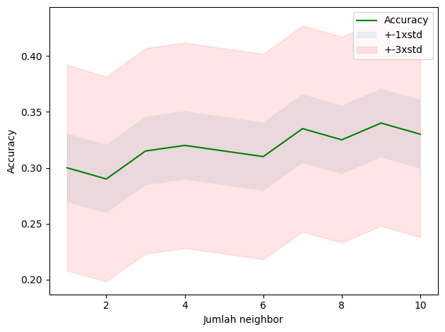
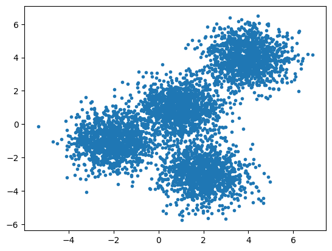

#import modul
import numpy as np
import matplotlib.pyplot as plt
import pandas as pd
%matplotlib inlineModul 6 Praktikum Sains Data: K-Nearest Neighbor, K-Means Clustering
Kembali ke Sains Data
K-Nearest Neighbor

K-Nearest neighbor adalah salah satu jenis algoritma supervised learning. Biasanya, algoritma ini digunakan untuk masalah klasifikasi. Kelas dari data tersebut ditentukan dari sejumlah k titik yang berperan “tetangga”. Pada gambar di atas, ketika k = 3, bintang akan diklasifikasikan sebagai kelas ungu, sebab mayoritas dari tetangganya adalah ungu. Sedangkan, ketika k = 6, bintang akan diklasifikasikan sebagai kelas kuning.
Data
Pada module kali ini, akan digunakan data csv teleCust1000t (teleCust1000t.csv) yang bisa didownload dari: - Direct link (langsung dari GitHub Pages ini) - Kaggle: https://www.kaggle.com/code/zohaib123/telecusts-prediction-k-nearest-neighbors
#membaca dataset
df = pd.read_csv('./teleCust1000t.csv')
df.head()| region | tenure | age | marital | address | income | ed | employ | retire | gender | reside | custcat | |
|---|---|---|---|---|---|---|---|---|---|---|---|---|
| 0 | 2 | 13 | 44 | 1 | 9 | 64.0 | 4 | 5 | 0.0 | 0 | 2 | 1 |
| 1 | 3 | 11 | 33 | 1 | 7 | 136.0 | 5 | 5 | 0.0 | 0 | 6 | 4 |
| 2 | 3 | 68 | 52 | 1 | 24 | 116.0 | 1 | 29 | 0.0 | 1 | 2 | 3 |
| 3 | 2 | 33 | 33 | 0 | 12 | 33.0 | 2 | 0 | 0.0 | 1 | 1 | 1 |
| 4 | 2 | 23 | 30 | 1 | 9 | 30.0 | 1 | 2 | 0.0 | 0 | 4 | 3 |
#menghitung jumlah anggota tiap kelas
df['custcat'].value_counts()custcat
3 281
1 266
4 236
2 217
Name: count, dtype: int64 #melihat sebaran income dengan histogram
df.hist(column='income')array([[<Axes: title={'center': 'income'}>]], dtype=object)
#melihat 4 row pertama
X = df[['region', 'tenure', 'age', 'marital', 'address', 'income', 'ed', 'employ', 'retire','gender', 'reside']].values
X[0:4]array([[ 2., 13., 44., 1., 9., 64., 4., 5., 0., 0., 2.],
[ 3., 11., 33., 1., 7., 136., 5., 5., 0., 0., 6.],
[ 3., 68., 52., 1., 24., 116., 1., 29., 0., 1., 2.],
[ 2., 33., 33., 0., 12., 33., 2., 0., 0., 1., 1.]])#melihat kelas dari 4 row pertama
Y = df[['custcat']].values
Y[0:4]array([[1],
[4],
[3],
[1]], dtype=int64)Preprocessing
from sklearn import preprocessing#normalize data
X = preprocessing.StandardScaler().fit(X).transform(X.astype(float))
X[0:4]array([[-0.02696767, -1.055125 , 0.18450456, 1.0100505 , -0.25303431,
-0.12650641, 1.0877526 , -0.5941226 , -0.22207644, -1.03459817,
-0.23065004],
[ 1.19883553, -1.14880563, -0.69181243, 1.0100505 , -0.4514148 ,
0.54644972, 1.9062271 , -0.5941226 , -0.22207644, -1.03459817,
2.55666158],
[ 1.19883553, 1.52109247, 0.82182601, 1.0100505 , 1.23481934,
0.35951747, -1.36767088, 1.78752803, -0.22207644, 0.96655883,
-0.23065004],
[-0.02696767, -0.11831864, -0.69181243, -0.9900495 , 0.04453642,
-0.41625141, -0.54919639, -1.09029981, -0.22207644, 0.96655883,
-0.92747794]])Train test split
#train test split
from sklearn.model_selection import train_test_split
X_train, X_test, Y_train, Y_test = train_test_split(X,Y, test_size = 0.2, random_state = 4)print(X_train.shape)
print(Y_train.shape)
print(X_test.shape)
print(Y_test.shape)(800, 11)
(800, 1)
(200, 11)
(200, 1)Membuat model
#membuat model dengan k = 4
from sklearn.neighbors import KNeighborsClassifier
k = 4
neighbor = KNeighborsClassifier(n_neighbors = k).fit(X_train, Y_train)c:\Users\ACER\AppData\Local\Programs\Python\Python312\Lib\site-packages\sklearn\neighbors\_classification.py:238: DataConversionWarning: A column-vector y was passed when a 1d array was expected. Please change the shape of y to (n_samples,), for example using ravel().
return self._fit(X, y)Prediksi
#hasil prediksi
ypredict = neighbor.predict(X_test)
ypredict[0:5]array([1, 1, 3, 2, 4], dtype=int64)#kelas sebenarnya
Y_test[0:5]array([[4],
[1],
[1],
[2],
[4]], dtype=int64)Evaluasi Model
#menghitung akurasi
from sklearn import metrics
metrics.accuracy_score(Y_test,ypredict)0.32Membuat model dengan k lainnya
#membuat model dengan k = 6
k = 6
neighbor_6 = KNeighborsClassifier(n_neighbors = k).fit(X_train, Y_train)c:\Users\ACER\AppData\Local\Programs\Python\Python312\Lib\site-packages\sklearn\neighbors\_classification.py:238: DataConversionWarning: A column-vector y was passed when a 1d array was expected. Please change the shape of y to (n_samples,), for example using ravel().
return self._fit(X, y)#hasil prediksi
ypredict6 = neighbor_6.predict(X_test)
ypredict6[0:5]array([3, 3, 3, 4, 4], dtype=int64)#kelas sebenarnya
Y_test[0:5]array([[4],
[1],
[1],
[2],
[4]], dtype=int64)#akurasi
metrics.accuracy_score(Y_test,ypredict6)0.31Mencari k terbaik
Kinerja model K-NN sangat bergantung pada jumlah k yang dipilih. Kita dapat menentukan k terbaik dengan menggunakan loop.
#mencari k terbaik diantara 1<=k<=10
nk = 10
mean_acc= np.zeros((nk))
std_acc = np.zeros((nk))
for n in range(1,nk+1):
neighbor_k = KNeighborsClassifier(n_neighbors= n).fit(X_train,Y_train)
ypredict = neighbor_k.predict(X_test)
mean_acc[n-1] = metrics.accuracy_score(Y_test, ypredict)
std_acc[n-1]= np.std(ypredict==Y_test)/np.sqrt(ypredict.shape[0])
mean_accc:\Users\ACER\AppData\Local\Programs\Python\Python312\Lib\site-packages\sklearn\neighbors\_classification.py:238: DataConversionWarning: A column-vector y was passed when a 1d array was expected. Please change the shape of y to (n_samples,), for example using ravel().
return self._fit(X, y)
c:\Users\ACER\AppData\Local\Programs\Python\Python312\Lib\site-packages\sklearn\neighbors\_classification.py:238: DataConversionWarning: A column-vector y was passed when a 1d array was expected. Please change the shape of y to (n_samples,), for example using ravel().
return self._fit(X, y)
c:\Users\ACER\AppData\Local\Programs\Python\Python312\Lib\site-packages\sklearn\neighbors\_classification.py:238: DataConversionWarning: A column-vector y was passed when a 1d array was expected. Please change the shape of y to (n_samples,), for example using ravel().
return self._fit(X, y)
c:\Users\ACER\AppData\Local\Programs\Python\Python312\Lib\site-packages\sklearn\neighbors\_classification.py:238: DataConversionWarning: A column-vector y was passed when a 1d array was expected. Please change the shape of y to (n_samples,), for example using ravel().
return self._fit(X, y)
c:\Users\ACER\AppData\Local\Programs\Python\Python312\Lib\site-packages\sklearn\neighbors\_classification.py:238: DataConversionWarning: A column-vector y was passed when a 1d array was expected. Please change the shape of y to (n_samples,), for example using ravel().
return self._fit(X, y)
c:\Users\ACER\AppData\Local\Programs\Python\Python312\Lib\site-packages\sklearn\neighbors\_classification.py:238: DataConversionWarning: A column-vector y was passed when a 1d array was expected. Please change the shape of y to (n_samples,), for example using ravel().
return self._fit(X, y)
c:\Users\ACER\AppData\Local\Programs\Python\Python312\Lib\site-packages\sklearn\neighbors\_classification.py:238: DataConversionWarning: A column-vector y was passed when a 1d array was expected. Please change the shape of y to (n_samples,), for example using ravel().
return self._fit(X, y)
c:\Users\ACER\AppData\Local\Programs\Python\Python312\Lib\site-packages\sklearn\neighbors\_classification.py:238: DataConversionWarning: A column-vector y was passed when a 1d array was expected. Please change the shape of y to (n_samples,), for example using ravel().
return self._fit(X, y)
c:\Users\ACER\AppData\Local\Programs\Python\Python312\Lib\site-packages\sklearn\neighbors\_classification.py:238: DataConversionWarning: A column-vector y was passed when a 1d array was expected. Please change the shape of y to (n_samples,), for example using ravel().
return self._fit(X, y)
c:\Users\ACER\AppData\Local\Programs\Python\Python312\Lib\site-packages\sklearn\neighbors\_classification.py:238: DataConversionWarning: A column-vector y was passed when a 1d array was expected. Please change the shape of y to (n_samples,), for example using ravel().
return self._fit(X, y)array([0.3 , 0.29 , 0.315, 0.32 , 0.315, 0.31 , 0.335, 0.325, 0.34 ,
0.33 ])#plot akurasi dari beberapa k
plt.plot(range(1,nk+1),mean_acc,'g')
plt.fill_between(range(1,nk+1),mean_acc-1*std_acc,mean_acc+1*std_acc,alpha = 0.10)
plt.fill_between(range(1,nk+1),mean_acc-3*std_acc,mean_acc+3*std_acc,alpha = 0.10, color = "red")
plt.legend(('Accuracy', '+-1xstd', '+-3xstd'))
plt.ylabel('Accuracy')
plt.xlabel('Jumlah neighbor')
plt.tight_layout()
plt.show()
#k terbaik beserta hasilnya
print("akurasi terbaik model adalah", mean_acc.max(), "dengan jumlah k=", mean_acc.argmax()+1)akurasi terbaik model adalah 0.34 dengan jumlah k= 9Clustering
- Termasuk dalam kategori unsupervised learning (data tidak memiliki label)
- Mengelompokkan data data dengan sifat/karakteristik yg sama sebagai satu cluster
- Cluster : sekelompok objek yang memiliki kesamaan dengan objek yang ada di cluster tersebut dan berbeda dengan objek di cluster lainnya
- Aplikasi : rekomendasi film/musik pada aplikasi, iklan pada sosmed, dll.

K-Means Clustering
K-Means bertujuan memperkecil jarak antar data (SSE) dalam cluster dan memperbesar jarak antar cluster
\[SSE = \sum (x_i -c_j)^2\]
Langkah-Langkah: 1. Tentukan centroid untuk k cluster 2. Hitung jarak tiap data dengan centroid 3. Assign data ke centroid terdeka 4. Tentukan centroid baru 5. Ulangi langkah 1 - 4
K-means Clustering menggunakan dataset random
Contoh K-Means clustering menggunakan data random.
#import modul yang diperlukan
import random
import numpy as np
import matplotlib.pyplot as plt
from sklearn.cluster import KMeans
from sklearn.datasets import make_blobs
%matplotlib inlineData
#data
np.random.seed(0)#membuat sample, dengan centroid sebagai berikut
X, y = make_blobs(n_samples= 5000, centers = [[4,4],[-2,-1],[2,-3],[1,1]], cluster_std=0.9)#menggambar plot dari sample
plt.scatter(X[:,0], X[:,1],marker='.')<matplotlib.collections.PathCollection at 0x1b6ddf7fd70>
Membuat model
#buat model k-means, jumlah cluster 4, algoritma akan diulang sebanyak 12 kali
k_means = KMeans(init="k-means++", n_clusters = 4, n_init =12)#fitting x ke model
k_means.fit(X)KMeans(n_clusters=4, n_init=12)In a Jupyter environment, please rerun this cell to show the HTML representation or trust the notebook.
On GitHub, the HTML representation is unable to render, please try loading this page with nbviewer.org.
KMeans(n_clusters=4, n_init=12)
Output hasil clustering
#hasil clustering pada data
k_means_labels = k_means.labels_
k_means_labelsarray([0, 3, 3, ..., 1, 0, 0])#centroid dari 4 cluster setelah menggunakan model k-means
k_means_cluster_centers = k_means.cluster_centers_
k_means_cluster_centersarray([[-2.03743147, -0.99782524],
[ 3.97334234, 3.98758687],
[ 0.96900523, 0.98370298],
[ 1.99741008, -3.01666822]])#plot hasil clustering
fig = plt.figure(figsize=(6,4))
colors = plt.cm.Spectral(np.linspace(0,1, len(set(k_means_labels))))
ax= fig.add_subplot(1,1,1)
for k, col in zip(range(len([[4,4],[-2,-1],[2,-3],[1,1]])), colors) :
my_members = (k_means_labels==k)
cluster_center = k_means_cluster_centers[k]
ax.plot(X[my_members,0], X[my_members,1], 'w', markerfacecolor=col,marker='.')
ax.plot(cluster_center[0],cluster_center[1],'o',markerfacecolor=col,markeredgecolor='k',markersize=
6)
ax.set_title('KMeans Clustering')
#hilangkan sumbu
ax.set_xticks(())
ax.set_yticks(())
plt.show()
K-Means Clustering menggunakan dataset (csv)
Pada contoh ini, akan dilakukan clustering menggunakan dataset nasabah bank (Cust_Segmentation.csv). - Direct link (langsung dari GitHub Pages ini) - Kaggle: https://www.kaggle.com/datasets/sam1o1/cust-segmentation
Nasabah tersebut akan dikelompokkan menjadi 3 cluster.
#import modul dan membaca dataset
import pandas as pd
cust_df = pd.read_csv(r'./Cust_Segmentation.csv')Data
#cuplikan dataset
cust_df.head()| Customer Id | Age | Edu | Years Employed | Income | Card Debt | Other Debt | Defaulted | Address | DebtIncomeRatio | |
|---|---|---|---|---|---|---|---|---|---|---|
| 0 | 1 | 41 | 2 | 6 | 19 | 0.124 | 1.073 | 0.0 | NBA001 | 6.3 |
| 1 | 2 | 47 | 1 | 26 | 100 | 4.582 | 8.218 | 0.0 | NBA021 | 12.8 |
| 2 | 3 | 33 | 2 | 10 | 57 | 6.111 | 5.802 | 1.0 | NBA013 | 20.9 |
| 3 | 4 | 29 | 2 | 4 | 19 | 0.681 | 0.516 | 0.0 | NBA009 | 6.3 |
| 4 | 5 | 47 | 1 | 31 | 253 | 9.308 | 8.908 | 0.0 | NBA008 | 7.2 |
#periksa tipe data dari masing masing kolom pada dataset
cust_df.info()<class 'pandas.core.frame.DataFrame'>
RangeIndex: 850 entries, 0 to 849
Data columns (total 10 columns):
# Column Non-Null Count Dtype
--- ------ -------------- -----
0 Customer Id 850 non-null int64
1 Age 850 non-null int64
2 Edu 850 non-null int64
3 Years Employed 850 non-null int64
4 Income 850 non-null int64
5 Card Debt 850 non-null float64
6 Other Debt 850 non-null float64
7 Defaulted 700 non-null float64
8 Address 850 non-null object
9 DebtIncomeRatio 850 non-null float64
dtypes: float64(4), int64(5), object(1)
memory usage: 66.5+ KBPreprocessing data
#buat semua data menjadi numerik
cust_df2 = cust_df.drop('Address',axis=1)
cust_df2.head()| Customer Id | Age | Edu | Years Employed | Income | Card Debt | Other Debt | Defaulted | DebtIncomeRatio | |
|---|---|---|---|---|---|---|---|---|---|
| 0 | 1 | 41 | 2 | 6 | 19 | 0.124 | 1.073 | 0.0 | 6.3 |
| 1 | 2 | 47 | 1 | 26 | 100 | 4.582 | 8.218 | 0.0 | 12.8 |
| 2 | 3 | 33 | 2 | 10 | 57 | 6.111 | 5.802 | 1.0 | 20.9 |
| 3 | 4 | 29 | 2 | 4 | 19 | 0.681 | 0.516 | 0.0 | 6.3 |
| 4 | 5 | 47 | 1 | 31 | 253 | 9.308 | 8.908 | 0.0 | 7.2 |
cust_df2.info()<class 'pandas.core.frame.DataFrame'>
RangeIndex: 850 entries, 0 to 849
Data columns (total 9 columns):
# Column Non-Null Count Dtype
--- ------ -------------- -----
0 Customer Id 850 non-null int64
1 Age 850 non-null int64
2 Edu 850 non-null int64
3 Years Employed 850 non-null int64
4 Income 850 non-null int64
5 Card Debt 850 non-null float64
6 Other Debt 850 non-null float64
7 Defaulted 700 non-null float64
8 DebtIncomeRatio 850 non-null float64
dtypes: float64(4), int64(5)
memory usage: 59.9 KB#scaling value yang terdapat pada dataset agar error tidak besar
from sklearn.preprocessing import StandardScaler
X = cust_df2.values[:,1:]
X = np.nan_to_num(X)
Clus_dataSet= StandardScaler().fit_transform(X)
Clus_dataSetarray([[ 0.74291541, 0.31212243, -0.37878978, ..., -0.59048916,
-0.52379654, -0.57652509],
[ 1.48949049, -0.76634938, 2.5737211 , ..., 1.51296181,
-0.52379654, 0.39138677],
[-0.25251804, 0.31212243, 0.2117124 , ..., 0.80170393,
1.90913822, 1.59755385],
...,
[-1.24795149, 2.46906604, -1.26454304, ..., 0.03863257,
1.90913822, 3.45892281],
[-0.37694723, -0.76634938, 0.50696349, ..., -0.70147601,
-0.52379654, -1.08281745],
[ 2.1116364 , -0.76634938, 1.09746566, ..., 0.16463355,
-0.52379654, -0.2340332 ]])Membuat model
#modelling
clusterNum = 3
k_means_cust = KMeans(init = 'k-means++', n_clusters= clusterNum, n_init = 12)
#3 cluster, dengan running algoritma sebanyak 12 kali
k_means_cust.fit(X)
#hasil clustering
labels_cust = k_means_cust.labels_
print(labels_cust)[2 0 2 2 1 0 2 0 2 0 0 2 2 2 2 2 2 2 0 2 2 2 2 0 0 0 2 2 0 2 0 2 2 2 2 2 2
2 2 0 2 0 2 1 2 0 2 2 2 0 0 2 2 0 0 2 2 2 0 2 0 2 0 0 2 2 0 2 2 2 0 0 0 2
2 2 2 2 0 2 0 0 1 2 2 2 2 2 2 2 0 2 2 2 2 2 2 2 2 2 2 0 0 2 2 2 2 2 2 0 2
2 2 2 2 2 2 2 0 2 2 2 2 2 2 0 2 2 2 2 2 0 2 2 2 2 0 2 2 2 2 2 2 2 0 2 0 2
2 2 2 2 2 2 0 2 0 0 2 0 2 2 0 2 2 2 2 2 2 2 0 2 2 2 2 2 2 2 2 0 2 2 2 0 2
2 2 2 2 0 2 2 0 2 0 2 2 0 1 2 0 2 2 2 2 2 2 1 0 2 2 2 2 0 2 2 0 0 2 0 2 0
2 2 2 2 0 2 2 2 2 2 2 2 0 2 2 2 2 2 2 2 2 2 2 1 0 2 2 2 2 2 2 2 0 2 2 2 2
2 2 0 2 2 0 2 2 0 2 2 2 2 2 2 2 2 2 2 2 2 2 0 0 2 0 2 0 2 0 0 2 2 2 2 2 2
2 2 2 0 0 0 2 2 2 0 2 2 2 2 2 2 2 2 2 2 2 2 2 2 0 2 0 2 2 2 2 2 0 2 0 0 2
2 2 2 2 0 2 2 2 2 2 2 0 2 2 0 2 2 0 2 2 2 2 2 0 2 2 2 1 2 2 2 0 2 0 0 0 2
2 2 0 2 2 2 2 2 2 2 2 2 2 2 0 2 0 2 2 2 2 2 2 2 2 2 2 0 2 2 2 2 2 2 2 2 2
2 0 2 2 0 2 2 2 2 0 2 2 2 2 0 2 2 0 2 2 2 2 2 2 2 2 2 0 2 2 2 0 2 2 2 2 1
2 2 2 2 2 2 0 2 2 2 1 2 2 2 2 0 2 1 2 2 2 2 0 2 0 0 0 2 2 0 0 2 2 2 2 2 2
2 0 2 2 2 2 0 2 2 2 0 2 0 2 2 2 0 2 2 2 2 0 0 2 2 2 2 0 2 2 2 2 0 2 2 2 2
2 0 0 2 2 2 2 2 2 2 2 2 2 2 1 0 2 2 2 2 2 2 0 2 2 2 2 0 2 2 0 2 2 1 2 1 2
2 1 2 2 2 2 2 2 2 2 2 0 2 0 2 2 1 2 2 2 2 2 2 2 2 0 2 2 2 2 2 2 2 2 0 2 0
2 2 2 2 2 2 0 2 2 2 2 0 2 0 2 2 2 2 2 2 2 2 2 2 2 2 2 2 0 2 2 2 2 2 2 2 0
0 2 2 0 2 0 2 2 0 2 0 2 2 1 2 0 2 0 2 2 2 2 2 0 0 2 2 2 2 0 2 2 2 0 0 2 2
0 2 2 2 0 2 1 2 2 0 2 2 2 2 2 2 2 0 2 2 2 0 2 2 2 2 2 0 2 2 0 2 2 2 2 2 2
2 2 0 2 2 0 2 0 2 0 0 2 2 2 0 2 0 2 2 2 2 2 0 2 2 2 2 0 0 2 2 0 0 2 2 2 2
2 0 2 2 2 2 0 2 2 2 2 2 2 2 2 2 2 2 0 2 0 0 2 0 2 0 0 2 2 0 2 2 2 2 2 0 0
2 2 2 2 2 2 2 0 2 2 2 2 2 2 1 0 0 2 2 2 2 2 2 2 0 2 2 2 2 2 2 0 2 2 2 2 2
2 2 2 2 2 2 2 2 2 2 2 0 2 2 2 2 2 2 2 2 2 2 2 2 2 2 2 0 2 2 2 2 2 2 2 0]#menambahkan kolom hasil clustering pada dataset
cust_df2['Clus_km'] = labels_cust
cust_df2.head(5)| Customer Id | Age | Edu | Years Employed | Income | Card Debt | Other Debt | Defaulted | DebtIncomeRatio | Clus_km | |
|---|---|---|---|---|---|---|---|---|---|---|
| 0 | 1 | 41 | 2 | 6 | 19 | 0.124 | 1.073 | 0.0 | 6.3 | 2 |
| 1 | 2 | 47 | 1 | 26 | 100 | 4.582 | 8.218 | 0.0 | 12.8 | 0 |
| 2 | 3 | 33 | 2 | 10 | 57 | 6.111 | 5.802 | 1.0 | 20.9 | 2 |
| 3 | 4 | 29 | 2 | 4 | 19 | 0.681 | 0.516 | 0.0 | 6.3 | 2 |
| 4 | 5 | 47 | 1 | 31 | 253 | 9.308 | 8.908 | 0.0 | 7.2 | 1 |
#melihat rata rata per cluster
cust_df2.groupby('Clus_km').mean()| Customer Id | Age | Edu | Years Employed | Income | Card Debt | Other Debt | Defaulted | DebtIncomeRatio | |
|---|---|---|---|---|---|---|---|---|---|
| Clus_km | |||||||||
| 0 | 402.295082 | 41.333333 | 1.956284 | 15.256831 | 83.928962 | 3.103639 | 5.765279 | 0.171233 | 10.724590 |
| 1 | 410.166667 | 45.388889 | 2.666667 | 19.555556 | 227.166667 | 5.678444 | 10.907167 | 0.285714 | 7.322222 |
| 2 | 432.468413 | 32.964561 | 1.614792 | 6.374422 | 31.164869 | 1.032541 | 2.104133 | 0.285185 | 10.094761 |
#plot hasil clustering berdasarkan age dan income
area = np.pi * (X[:, 1])**2
plt.scatter(X[:,0],X[:,3],s = area, c = labels_cust.astype(float), alpha=0.5)
plt.xlabel('Age',fontsize=18)
plt.ylabel('Income',fontsize = 16)
plt.show()
Kesimpulan
Dari datset diatas, kita dapat membuat 3 cluster, dengan segmentasi sebagai berikut:
- Kuning : dewasa muda, pendapatan rendah
- Ungu: dewasa menengah, pendapatan kelas menengah
- Hijau: dewasa tua, pendapatan tinggi